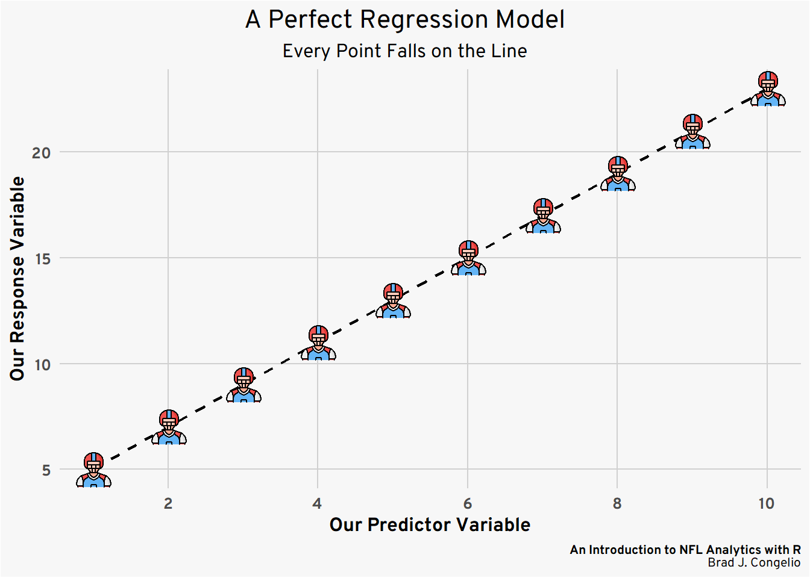
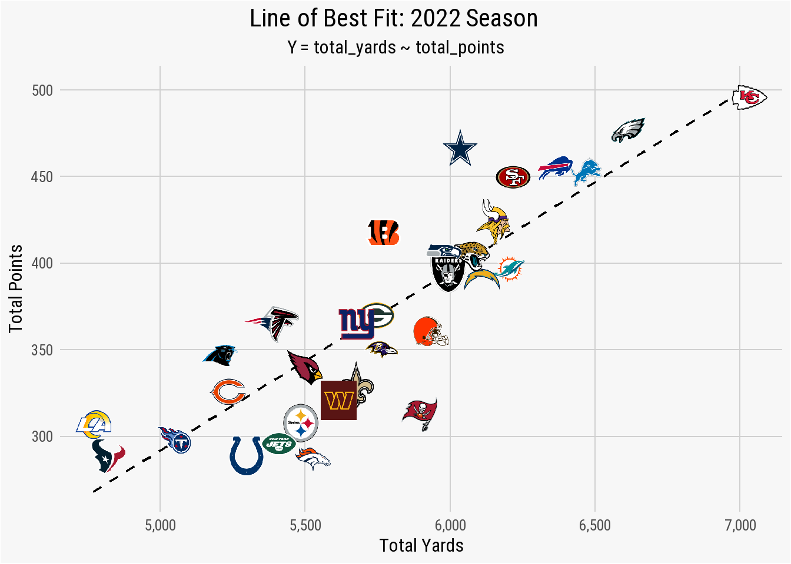
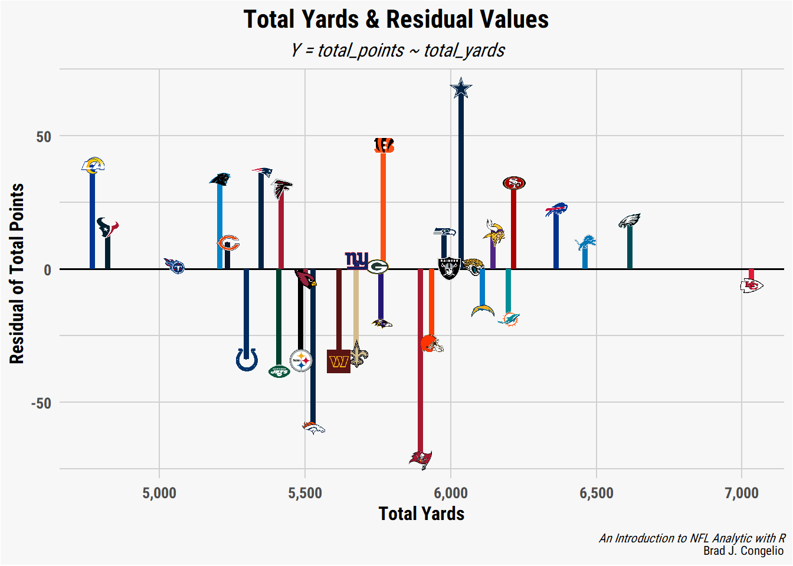
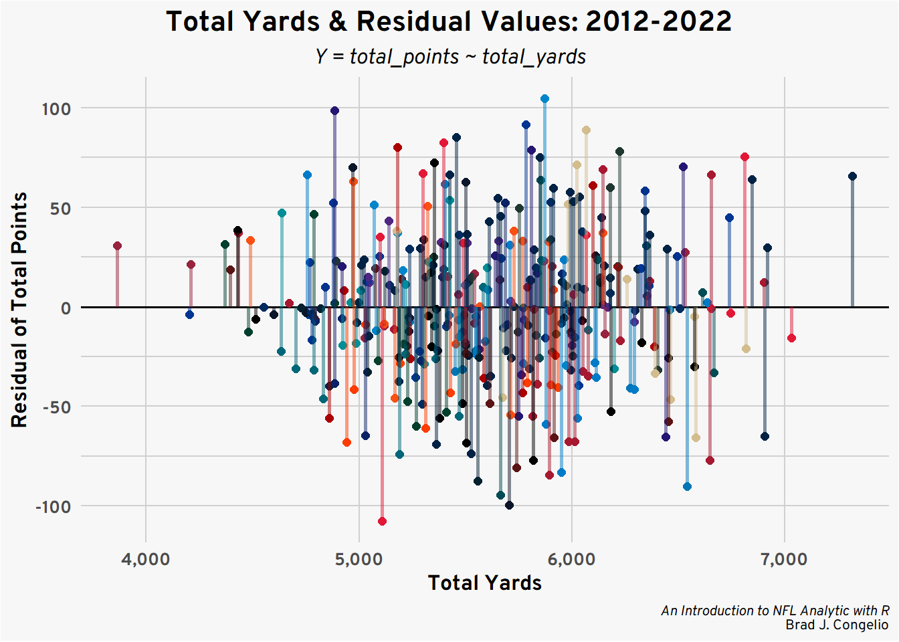
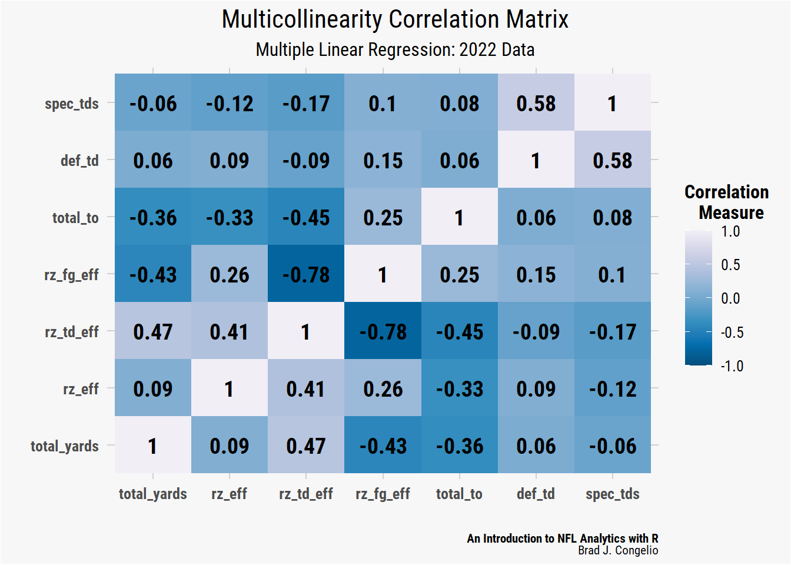

`Residuals:
Min 1Q Median 3Q Max
-71.443 -22.334 1.157 19.145 68.080
Coefficients:
Estimate Std. Error t value Pr(>|t|)
(Intercept) -225.03520 65.44927 -3.438 0.00174 **
total_yards 0.10341 0.01132 9.135 0.00000000036 ***
---
Signif. codes: 0 ‘***’ 0.001 ‘**’ 0.01 ‘*’ 0.05 ‘.’ 0.1 ‘ ’ 1
Residual standard error: 32.04 on 30 degrees of freedom
Multiple R-squared: 0.7356, Adjusted R-squared: 0.7268
F-statistic: 83.45 on 1 and 30 DF, p-value: 0.0000000003599`6 Advanced Methods: Modeling and Big Data Bowl
6.1 Introduction to Statistics and Modeling with NFL Data
6.2 Basic Statistical Modeling
6.3 Deciphering Statistical Results
information here will be provided to assist in understanding what the results of the models mean and will serve as a reference point for the rest of the chapter.
6.3.1 Understanding Linear Regression Results
Using the below example that explores the relationship between an NFL’s teams total yards and total points over the course of a season, the results of a linear regression model calculated using the lm() function includes the following information (explained afterward):
6.3.1.1 Residuals
A linear model’s residuals are the calculated difference between actual values of the dependent values as found in the data used to build the model and those values predicted by the regression model. In a perfect uniform relationship, all of the values from a dataset would sit perfectly on top of the “line of best fit.” Take the below graph, for example.

In this example model, our regression model was able to successfully capture the entirety of the relationship between Our Predictor Variable on the x-axis and the Our Response Variable on the y-axis. This means that the model leaves no unexplained or undetermined variance between the variables and, because of this, the model can take additional unused data to predict, with 100% accuracy, the resulting value of the dependent variable. It is exceedingly rare to have real-world data be perfectly situated on the line of best fit. In fact, it is more often than not a sign of “overfitting,” which occurs when the model successfully discovers the “random noise” in the data. In the majority of cases, a regression model with a perfect line of fit will perform exceedingly poorly when introduced to unseen data.
A regression model that is not “overfitted” will have data points that do not fit on the line of best fit, but fall over and under it. The results of the regression model uses a simple formula - residual = observed_value - predicted_value to help us interpret the difference between those actual and estimated values.
The information produced in the example lm() summary above includes statistical information about the distribution of the model’s residual errors.
| Summary Distribution | Meaning |
|---|---|
The Min Distribution |
The Min distribution provides the smallest difference between the actual values of the model’s predictor variable (total points) and the predicted. In the example summary, the minimum residual is -71.443 which means that the lm() model predicted that one specific team scored 71.443 more points than it actually did.
|
The 1Q Distribution |
The 1Q distribution is based on the first quartile of the data (or where the first 25% of the model’s residual fall on the line of best fit). The 1Q residual is -22.334, which means the lm() model predicted that 25% of the teams scored 22.334 more points than the actual values.
|
The Median Distribution |
The Median distribution, much like the 1Q distribution is data from the first quartile, is the residuals from the 50th percentile of the data. The Median residual in the above summary is 1.157, which means that the lm() model - for 50% of teams - either overestimated or underestimated a teams total points by less than 1.157 points.
|
The 3Q Distribution |
Covering the third quartile of the residuals, the 3Q Distribution is 19.145 which means that 75% of the NFL teams in the data had a total points prediction either overestimated or underestimated by less than 19.145 points.
|
The Max Distribution |
The opposite of the Min distribution, the Max distribution is the largest difference between the model’s observed and predicted values for a team’s total points. In this case, for one specific team, the model predicted the team scored 68.080 points less than the actual value.
|
Tip
A model’s residuals allow you to quickly get a broad view of how accurately it is predicting the data. Ideally, a well-performing model will return residuals that are small and distributed around zero in a consistent fashion. Residuals that are both small and evenly dispersed around zero are the first sign that the model is making predictions that are close to the actual value in the data and is avoiding both over- and underestimating.
But this is not always the case.
For example, we can compare our above example’s residuals to the below residual output produced by manually creating a dataset.
Min. 1st Qu. Median Mean 3rd Qu. Max.
-13.7015 -2.1831 -0.5963 0.0000 4.1594 10.5359 Compared to the residuals from the above NFL data, the residuals from the randomly created data are small in comparison and are more evenly distributed around zero. Given that, it is likely that the linear model is doing a good job at making predictions that are close to the actual value.
But that does not mean the residuals from the NFL data indicate a flawed and unreliable model. It needs to be noted that the “goodness” of any specific linear regression model is wholly dependent on both the context and the specific problem that the model is attempting to predict. To that end, it is also a matter of trusting your subject matter expertise on matters regarding the NFL.
There could be any number of reasons that can explain why the residuals from the regression model are large and not evenly distributed from zero. For example:
-
Red-zone efficiency: a team that moves the ball downfield with ease, but then struggles to score points once inside the 20-yardline , will accumulate
total_yardsbut failed to producetotal_pointsin the way the model predicted. -
Turnovers: Similar to above, a team may rack up
total_yardsbut ultimately continue to turn the ball over prior to being able to score. -
Defensive scoring: a score by a team’s defense, in this model, still counts towards
total_pointsbut does not count towardstotal_yards. - Strength of Opponent: At the end of the 2022 season, the Philadelphia Eagles and the New York Jets both allowed just 4.8 yards per play. The model’s predicted values of the other three teams in each respective division (NFC East and AFC East) could be incorrect because information, for example, the opponent’s strength of defense was not included in the model.
All that to say: residuals are a first glance at the results of the data and provide a broad generalization of how the model performed without taking outside contextual factors into consideration.
6.3.1.2 Coefficients
ffff
6.3.1.3 Simple Linear Regression
A simple linear regression is a fundamental statistical technique that is used to explore the relationship between two variables, specifically the dependent variable (also called the “response variable”) and the independent variable (also called the “predictor”). By using a simple linear regression, we can model the relationship between the two variables as a linear equation that best fits the observed data points.
A simple linear regression aims to fit a straight line through all the observed data points in such a way that the total squared distance between the actual observations and the values predicted by the model are minimal. This line is often referred to as either the “line of best fit” or the “regression line” and it represents the interaction between the dependent and independent variables. Mathematically, the equation for a simple linear regression is as follows:
\[ Y = {\beta}_0 + {\beta}_1 * X + \epsilon \]
- \(Y\), in the above equation, is the dependent variable where the \(X\) represents the independent variable.
- \({\beta}_o\) is the intercept of the regression model.
- \({\beta}_1\) is the slope of the model’s “line of best fit.”
- \(\epsilon\) represents the error term.
To better illustrate this, let’s use basic football terms using the above regression equation to compare a team’s offensive points scored in a season based on how many offensive yards it accumulated. The intercept (\({\beta}_o\)) represents the value when a team’s points scored and offensive yards are both zero. The slope (\({\beta}_1\)) represents the rate of change in \(Y\) as the unit of \(X\) changes. The error term (\(\epsilon\)) is represents the difference between the actual observed values of the regression’s dependent variable and the value as predicted by the model.
Using our points scored/total yards example, a team’s total yards gained is the independent variable and total points scored is the dependent variable, as a team’s total yardage is what drives the change in total points (in other words, a team’s total points is dependent on its total yardage). A team will not score points in the NFL if it is not also gaining yardage. We can view this relationship by building a simple linear regression model in R using the lm() function.
Note
The lm() function is a built-in function in RStudio that stands for “linear model” and is used, as described above, to fit a linear regression to the data that you provide. The completed regression estimates the coefficients of the regression, and also includes both the intercept and slope, which are the main factors in explaining the relationship between your data’s response and predictor variables.
The lm() function requires just two arguments in order to provide results: a formula and the dataframe to use and is structured like so: model_results <- lm(formula, data).
The formula argument require that you specify both the response and predictor variables, as named in your dataframe, in the structure of Y ~ X(wherein Y is the response variables and X is the predictor). In the case that you have more than one predictor variable, the + is used to add to the formula (lm(Y ~ X1 + X2).
The lm() function returns the coefficients, residuals, and other statistics of the model in a lm data object. There are There are numerous ways to access this data which are discussed in further detail below.
Let’s build a simple linear regression model that explores the relationship between the total yardage earned by a team over the course of a season and the number of points scored. To begin, place the prepared data in the simple_regression_data dataframe by running the code below.
simple_regression_data <- vroom::vroom("https://raw.githubusercontent.com/bcongelio/nfl-analytics-with-r-book/origin/example_data/csv/simple_regression_data.csv")
simple_regression_dataThe data contains the total yardage and points scored for each NFL team between 2012 and 2022. The data does not include any playoff games. Before running a model on all ten years of data, we will begin by selecting just information from 2022 and then build our lm() model. Beforehand, though, we can take the raw values from total_yards and total_points and view the expected line of best fit.
regression_2022 <- simple_regression_data %>%
filter(season == 2022)
teams <- nflreadr::load_teams(current = TRUE)
regression_2022 <- regression_2022 %>%
left_join(teams, by = c("team" = "team_abbr"))
ggplot(regression_2022, aes(x = total_yards, y = total_points)) +
geom_smooth(method = "lm", se = FALSE, color = "black", linetype = "dashed", size = .8) +
geom_image(aes(image = team_logo_wikipedia), asp = 16/9) +
scale_x_continuous(breaks = scales::pretty_breaks(),
labels = scales::comma_format()) +
scale_y_continuous(breaks = scales::pretty_breaks()) +
labs(title = "**Line of Best Fit: 2022 Season**",
subtitle = "*Y = total_yards ~ total_points*",
caption = "*An Introduction to NFL Analytic with R*<br>Brad J. Congelio") +
xlab("Total Yards") +
ylab("Total Points") +
nfl_analytics_theme()
The plot shows that based on a simple regression between total_yards and total_points that several teams - like the Titans, Giants, Packers, Raiders, Jaguars, and the Chiefs - are fitted nearly perfectly with the regression line. Other teams, however, such as the Buccaneers and the Cowboys are well off this line of best fit. To further examine this relationship, we can pass the data into a proper simple linear regression model and start exploring the summary statistics.
results_2022 <- lm(total_points ~ total_yards, data = regression_2022)Using the lm() function, the \(Y\) variable (the dependent) is total_yards and the \(X\) variable (the predictor) is entered as total_yards with the argument that the data is coming from the regression_2022 dataframe stored in the RStudio environment. We can view the results of the regression model by using the summary() function.
summary(results_2022)
Call:
lm(formula = total_points ~ total_yards, data = regression_2022)
Residuals:
Min 1Q Median 3Q Max
-71.443 -22.334 1.157 19.145 68.080
Coefficients:
Estimate Std. Error t value Pr(>|t|)
(Intercept) -225.03520 65.44927 -3.438 0.00174 **
total_yards 0.10341 0.01132 9.135 3.6e-10 ***
---
Signif. codes: 0 '***' 0.001 '**' 0.01 '*' 0.05 '.' 0.1 ' ' 1
Residual standard error: 32.04 on 30 degrees of freedom
Multiple R-squared: 0.7356, Adjusted R-squared: 0.7268
F-statistic: 83.45 on 1 and 30 DF, p-value: 3.599e-10While residuals are not the only summary statistics to examine in the results, they do provide a broad way to understand how the linear model performed. In this case, the residuals have a wide spread and an inconsistent deviation from zero. While the median residual value is the closest to zero at 1.157, it is still a bit too high to safely conclude that the model is making predictions that adequately reflect the actual values. Moreover, both tail ends of the residual values (Min and Max) are a large negative and positive number, respectively, which is a possible indication that both over- and underestimating a team’s total_points by statistically significant amount.
However, as mentioned in this chapter’s explanation of how to interpret residuals from a model’s summary statistics, the widespread and deviation from zero in the results is likely the result of numerous factors outside the model’s purview that occur in any one NFL game. To get a better idea of what the residual values represent, we can plot the data and include NFL team logos.
regression_2022$residuals <- residuals(results_2022)
ggplot(regression_2022, aes(x = total_yards, y = residuals)) +
geom_hline(yintercept = 0, color = "black", linewidth = .7) +
stat_fit_residuals(size = 0.01) +
stat_fit_deviations(size = 1.75, color = regression_2022$team_color) +
geom_image(aes(image = team_logo_wikipedia), asp = 16/9, size = .0325) +
scale_x_continuous(breaks = scales::pretty_breaks(),
labels = scales::comma_format()) +
scale_y_continuous(breaks = scales::pretty_breaks(n = 5)) +
labs(title = "**Total Yards & Residual Values**",
subtitle = "*Y = total_points ~ total_yards*",
caption = "*An Introduction to NFL Analytic with R*<br>Brad J. Congelio") +
xlab("Total Yards") +
ylab("Residual of Total Points") +
nfl_analytics_theme() +
theme(panel.grid.minor.y = element_line(color = "#d0d0d0"))
With the data visualized, it is clear that the model’s Min distribution of -71.44 is associated with the Tampa Bay Buccaneers, while the Max distribution of 68.08 is the prediction for the total points earned by the Dallas Cowboys. Because a negative residual means that the model’s predicted value is too high, and a positive residual means it was too low, we can conclude that the Buccaneers actually scored 71.4 points less than the the results of the model, while the Cowboys scored 68.08 more than predicted.
`Coefficients:
Estimate Std. Error t value Pr(>|t|)
(Intercept) -225.03520 65.44927 -3.438 0.00174 **
total_yards 0.10341 0.01132 9.135 0.00000000036 ***
---
Signif. codes: 0 ‘***’ 0.001 ‘**’ 0.01 ‘*’ 0.05 ‘.’ 0.1 ‘ ’ 1`˜.’ 0.1 ‘ ’ 1`The (Intercept) of the model, or where the regression line crosses the y-axis, is -225.0350. When working with NFL data, it of course does not make sense that the (Intercept) is negative. Given the model is built on a team’s total yards and total points, it seems intuitive that the regression line would cross the y-axis at the point of (0,0) as an NFL team not gaining any yards is highly unlike to score any points.
It is important to remember that the linear model attempts to position the regression line to come as close to all the individual points as possible. Because of this, it is not uncommon for regression line to not cross exactly where the x-axis and y-axis meet. Again, contextual factors of an NFL game are not account for in the model’s data: strength of the opponent’s defense, the quality of special teams play, defensive turnovers and/or touchdowns, field position, etc. can all impact a team’s ability to score points without gaining any yardage. The lack of this information in the data ultimately impact the positioning of the line of best fit.
The total_yards coefficient represents the slope of the model’s regression line. It is this slope that represents how a team’s total points are predicted to change with every additional gain of one yard. In this example, the total_yards coefficient is 0.10341 - so for every additional yard gained by a team, it is expected to add 0.10341 points to the team’s cumulative amount.
The Std. Error summary statistic provides guidance on the accuracy of the other estimated coefficients. The Std. Error for the model’s (Intercept) is quite large at 65.44927. Given the ability to resample the data from NFL terms numerous times and then allowing the linear model to predict again, this specific Std. Error argues that the regression line will cross the y-axis with 65.44972 of -225.03520 in either direction. Under normal circumstances, a large Std. Error for the (Intercept) would cause concern about the validity of the regression line’s crossing point. However, given the nature of this data - an NFL team cannot score negative points - we should not have any significant concern about the large Std. Error summary statistic for the (Intercept).
At 0.01132, the Std. Error for the total_yards coefficient is small and indicates that the Estimate of total_yards - that is, the increase in points per every yard gained - is quite accurate. Given repeated re-estimating of the data, the relationship between total_yards and total_points would vary by just 0.01132, either positively or negatively.
With a t-value of 9.135, the total_yards coefficient has a significant relationship with total_points. The A value of -3.438 indicates that the (Intercept) is statistically different from 0 but we should still largely ignore this relationship given the nature of the data.
The model’s Pr(>|t|) value of highly significant for total_yards and is still quite strong for the (Intercept). The value of 0.00000000036 indicates an incredibly significant relationship between total_yards and total_points.
The linear model’s Residual Standard Error is 32.04, which means that the average predicted values of total_points are 32.04 points different from the actual values in the data. The linear model was able to explain 73.56% of the variance between total_yards and total_points based on the multiple R-squared value of 0.7356. Additionally, the Adjusted R-squared value of 0.7268 is nearly identical to the multiple R2, which is a sign that the linear model is not overfitting (in this case because of the simplicity of the data). The model’s F-Statistic of 83.45 indicates a overall significance to the data, which is backed up by an extremely strong p-value.
Based on the summary statistics, the linear model did an extremely good job at capturing the relationship between a team’s total_yards and total_points. However, with residuals ranging from -71.443 to 68.080, it is likely that the model can be improved upon by adding additional information and statistics. However, before providing additional metrics, we can try to improve the model’s predictions by including all of the data (rather than just the 2022 season). By including 20-seasons worth of total_yards and total_points, we are increasing the sample size which, in theory, allows for a reduced impact of any outliers and an improve generalizability.
Important
Working with 10+ years of play-by-play data can be problematic in that them model, using just total_yards and total_points, is not aware of changes in the overall style of play NFL. The balance between rushing and passing has shifted, there’s been a philosophical shift in the coaching ranks in “going for it” on 4th down, etc. A simple linear regression cannot account for how these shifts impact the data on a season-by-season basis.
The results from including the total_points and total_yards for each NFL team from 2012-2022 show an improvement of the model, specifically with the residual values.
Without further testing, the residual values after including 20-seasons worth of data are a bit better. The Median is -1.26 which is slightly higher than just one season (M = 1.16). The 1Q and 3Q distributions are both approximately symmetric around the model’s M value compared to just the 2022 season regression that results in a deviation between 1Q and 3Q (-22.33 and 19.15, respectively). The Min and Max values of the new model still indicate longtail cases on both ends of the regression line much like the 2022 model found.
Tip
To further examine the residual values, we can use a Shapiro-Wilk Test to test the whether results are normally distributed.
The Shapiro-Wilk Test provides two values with the output: the test statistic (provided as a W score) and the model’s p-value. Scores for W can range between 0 and 1, where results closer to 1 meaning the residuals are in a normal distribution. The p-value is used make decision on the null hypothesis (that there is enough evidence to conclude that there is uneven distribution). In most cases, if the p-value is larger than the regression’s level of significance (typically 0.05), than you may reject the null hypothesis.
We can run the Shapiro-Wilk Test on our 2012-2022 data using the shapiro.test function that is part of the stats package in R.
results_2012_2020 <- residuals(all_season_results)
shapiro_test_result <- shapiro.test(results_2012_2020)
shapiro_test_result
Shapiro-Wilk normality test
data: results_2012_2020
W = 0.99704, p-value = 0.7737The W score for the residual is 1, meaning a very strong indication that the data in our model is part of a normal distribution. The p-value is 0.8, which is much large than the regression’s level of significance (0.05). As a result, we can reject the null hypothesis and again conclude that the data is in a normal distribution.
Using the Shapiro-Wilk Test to confirm the normal distribution of the data is help because, if plotted, the model that covers 20-seasons worth of data is harder to visually interpret than just one season as the plot increases from just 32 data points to 640, with many overlapping.
teams <- nflreadr::load_teams(current = TRUE)
regression_all_seasons <- left_join(regression_all_seasons, teams, by = c("team" = "team_abbr"))
regression_all_seasons$residuals <- residuals(all_season_results)
ggplot(regression_all_seasons, aes(x = total_yards, y = residuals)) +
geom_hline(yintercept = 0, color = "black", linewidth = .7) +
stat_fit_residuals(size = 2, color = regression_all_seasons$team_color) +
stat_fit_deviations(size = 1, color = regression_all_seasons$team_color, alpha = 0.5) +
scale_x_continuous(breaks = scales::pretty_breaks(),
labels = scales::comma_format()) +
scale_y_continuous(breaks = scales::pretty_breaks(n = 5)) +
labs(title = "**Total Yards & Residual Values: 2012-2022**",
subtitle = "*Y = total_points ~ total_yards*",
caption = "*An Introduction to NFL Analytic with R*<br>Brad J. Congelio") +
xlab("Total Yards") +
ylab("Residual of Total Points") +
nfl_analytics_theme() +
theme(panel.grid.minor.y = element_line(color = "#d0d0d0"))
We can also compare the multiple R2 and adjusted R2 score between the two regression models.
2012 - 2022 Data:
Multiple R-squared: 0.683
Adjusted R-squared: 0.682
2022 Data
Multiple R-squared: 0.736
Adjusted R-squared: 0.727The regression using just the 2022 data results in a slightly better multiple and adjusted R2 score compared to using data from the last twenty seasons of the NFL. While this does indicate that the model based on the single season is better at defining the relationship between a team’s total_yards and total_points it is essential to remember that there is different underlying patterns in the data as a result of the changing culture in the NFL and, ultimately, the epp and flow of team performance as a result of high levels of parity in the league.
In order to account for this “epp and flow” in both team performance and the changing culture/rules of the NFL, we need to turn to a multiple linear regression in include these additional factors as it is a model that is capable of better accounting for the nuances of NFL data.
6.3.1.4 Multiple Linear Regression
A multiple linear regression is extremely similar to a simple linear regression (both in design and how to create one in RStudio). The main difference, as discussed, is that a multiple linear regression allows for us to include additional predictor variables by using the + sign in the model’s formula. The inclusion fo these additional predictive variables, in theory, allow the model to compute the more complex relationships in NFL data and improve its final performance.
We will again create our first multiple linear regression with just data from the 2022 season that includes the same predictor (total_yards) and response variable (total_points). For additional predictors, we must consider what circumstances may lead a team to have high total_yardage but an amount of total_points that would fall below the model’s predicted value. We will include as additional predictors:
- Redzone Efficiency: provided as a percentage, this is a calculation of how many times a team drove into the red zone and scored. A higher percentage is better.
- Redzone Touchdown Efficiency: This is the same as redzone efficiency, but includes only the number of red zone trips divided by the total touchdowns scored from the redzone.
- Redzone Field Goal Efficiency: The same as redzone touchdown efficiency, but with field goals.
- Cumulative Turnovers: The total number of turnovers during the regular season.
- Defensive Touchdowns: The number of touchdowns scored by each team’s defensive unit.
- Special Teams Touchdowns: The number of touchdowns scored by special teams (kick/punt returns).
Let’s build the multiple regression model for only the 2022 season. You can read in the data using vroom::vroom.
multiple_lm_data <- vroom::vroom("https://raw.githubusercontent.com/bcongelio/nfl-analytics-with-r-book/origin/example_data/csv/multiple_lm_data.csv")
multiple_lm_dataThe data for the multiple linear regression has the same four columns as the simple linear regression (season, team, total_points, and total_yards). After are the new additional predictors (rz_eff, rz_td_eff, rz_fg_eff, def_td, and spec_tds).
Danger
Please note that, of the predictor and response variables, all of the values are in whole number format except for rz_eff, rz_td_eff, and rz_fg_eff. While it is not a problem to include predictors that are on differing scales (in this case, whole numbers and percentages), it may cause difficulty in interpreting the summary statistics. If this is the case, the issue can be resolved by using the scale() function to standardize all the data’s predictors against one another.
The construction of the multiple linear regression is the same process of the simple linear regression, with the inclusion of additional predictors to the formula using the + sign. We are applying a filter() to our multiple_lm_data to retrieve just the 2022 season to begin.
multiple_lm_2022 <- multiple_lm_data %>%
filter(season == 2022)
lm_multiple_2022 <- lm(total_points ~ total_yards + rz_eff + rz_td_eff +
rz_fg_eff + total_to + def_td + spec_tds, data = multiple_lm_2022)
summary(lm_multiple_2022)
Call:
lm(formula = total_points ~ total_yards + rz_eff + rz_td_eff +
rz_fg_eff + total_to + def_td + spec_tds, data = multiple_lm_2022)
Residuals:
Min 1Q Median 3Q Max
-53.035 -15.584 -0.353 14.603 43.528
Coefficients: (1 not defined because of singularities)
Estimate Std. Error t value Pr(>|t|)
(Intercept) -459.52248 128.55567 -3.575 0.00146 **
total_yards 0.09056 0.01129 8.020 2.25e-08 ***
rz_eff 228.88531 113.56255 2.016 0.05472 .
rz_td_eff 167.23235 82.70971 2.022 0.05401 .
rz_fg_eff NA NA NA NA
total_to 0.40582 1.49339 0.272 0.78805
def_td 4.45597 4.05728 1.098 0.28255
spec_tds 5.49769 7.86741 0.699 0.49113
---
Signif. codes: 0 '***' 0.001 '**' 0.01 '*' 0.05 '.' 0.1 ' ' 1
Residual standard error: 26.94 on 25 degrees of freedom
Multiple R-squared: 0.8442, Adjusted R-squared: 0.8068
F-statistic: 22.57 on 6 and 25 DF, p-value: 5.807e-09The summary statistic residuals for the multiple linear regression are more evenly distributed towards the mean than our simple linear regression. Based on the residuals, we can conclude that - for 50% of the teams - the model either over or underestimated their total_points by just -0.35 (as listed in the Median residual). The interquartile range (within the 1Q and 3Q quartiles) are both close to the median and the Min and Max residuals both decreased significantly from our simple linear model, indicating a overall better line of fit.
We can confirm that the multiple linear regression resulted in an even distribution of the residuals by again using a Shapiro-Wilk’s Test.
Shapiro-Wilk normality test
data: results_lm_2022
W = 0.98378, p-value = 0.8989The results of the Shapiro-Wilk’s test (W = 1 and p-value = 0.9) confirm that residuals are indeed evenly distributed. A visualization showcases the model’s even distribution of the residuals.
### gathering the fitted numbers and residual numbers
mlm_2022_fitted <- predict(lm_multiple_2022)
mlm_2022_residuals <- residuals(lm_multiple_2022)
### binding them into a data frame
plot_data_2022 <- data.frame(Fitted = mlm_2022_fitted, Residuals = mlm_2022_residuals)
### c binding teams
plot_data_2022 <- plot_data_2022 %>%
cbind(teams)
### plotting
ggplot(plot_data_2022, aes(x = Fitted, y = Residuals)) +
geom_hline(yintercept = 0, color = "black", linewidth = .7) +
stat_fit_deviations(size = 1.75, color = plot_data_2022$team_color) +
geom_image(aes(image = team_logo_espn), asp = 16/9, size = .0325) +
scale_x_continuous(breaks = scales::pretty_breaks(),
labels = scales::comma_format()) +
scale_y_continuous(breaks = scales::pretty_breaks()) +
labs(title = "**Multiple Linear Regression Model: 2022**",
caption = "*An Introduction to NFL Analytic with R*<br>Brad J. Congelio") +
xlab("Fitted Values") +
ylab("Residual Values") +
nfl_analytics_theme() +
theme(panel.grid.minor.y = element_line(color = "#d0d0d0"))
Just as the residual values in the summary statistics indicated, plotting the fitted_values against the residual_values shows an acceptable spread in the distribution, especially given the nature of NFL data. Despite positive results in the residual values, the summary statistics of the mulitple linear regression indicates a significant issue with the data. Within the Coefficients, it is explained that one of the items is “not defined because of singularities.”
Important
“Singularities” occur in the data as a result of the dreaded multicollinearity between two or more predictors. The involved predictors were found to have a high amount of correlation between one another, meaning that one of the variables can be predicted in a near linear fashion with one or more of the other predictive variables. As a result, it is difficult for the regression model to correctly estimate the contribution of these dependent variables to the response variable.
The model’s Coefficients of our multiple linear regression shows NA values for the rz_fg_eff predictor (the percentage of times a team made a field goal in the red zone rather than a touchdown). This is because rz_fg_eff was one of the predictive variables strongly correlated with another but just that it was the one dropped by the regression model to avoid producing flawed statistics as a result of the multicollinearity.
If you are comfortable producing the lienar regression with rz_fg_eff being a dropped predictor, that are no issues with that. However, we can create a correlation plot that allows is to determine which predictors have high correlation values with others. Examining the issue allows us to determine if rz_fg_eff is, indeed, the predictive variable we want the regression to drop or if we’d rather, for example, drop rz_eff and keep just the split between touchdowns and field goals.
regression_corr <- cor(multiple_lm_2022[, c("total_yards", "rz_eff", "rz_td_eff",
"rz_fg_eff", "total_to", "def_td", "spec_tds")])
### melting the regression_corr to prep for ggplot
melted_regression_corr <- melt(regression_corr)
## plotting
ggplot(data = melted_regression_corr, aes(x = Var1, y = Var2, fill = value)) +
geom_tile() +
scale_fill_distiller(palette = "PuBu", direction = -1, limits = c(-1, +1)) +
geom_text(aes(x = Var1, y = Var2, label = round(value, 2)), color = "black",
fontface = "bold", family = "Roboto Condensed", size = 5) +
labs(title = "Multicollinearity Correlation Matrix",
subtitle = "Multiple Linear Regression: 2022 Data",
caption = "**An Introduction to NFL Analytics with R**<br>Brad J. Congelio") +
nfl_analytics_theme() +
labs(fill = "Correlation \n Measure", x = "", y = "") +
theme(legend.background = element_rect(fill = "#F7F7F7"),
legend.key = element_rect(fill = "#F7F7F7"))
Using a correlation plot allows for easy identification of those predictive variables that have high correlation with one another. The general rule is that two predictors become problematic in the regression model in the coefficient between the two is above 0.7 (0.8, given domain knowledge about the context of the data).
In our correlation plot, there are two squares in (indicated by the darkest blue color) that have a value greater than 0.7 (or -0.7 in this case, as both strong and negative correlations are capable of producing multicollinearity. The two squares happen to relate to the same relationship between the rz_fg_eff and rz_td_eff predictors.
Recall that the regression model automatically removed the rz_fg_eff from the measured Coefficients. Given the context of the data, I am not sure that is the best decision. Given we are examining the relationship the predictive variables and total_points, removing the rz_fg_eff variable inherently erases a core source of points in a game of football.
Because of this - and since our rz_eff predictor accounts for both touchdowns and field goals - I believe we could move forward on rerunning the regression without either rz_fg_eff and rz_td_eff.
To run the multiple linear regression again, without the predictors relating to red zone touchdown and field efficiency, we will drop both from our multiple_lm_2022 dataframe, rerun the regression model, and then examine the ensuing summary statistics.
multiple_lm_2022_edit <- multiple_lm_2022 %>%
select(-rz_td_eff, -rz_fg_eff)
lm_multiple_2022_edit <- lm(total_points ~ total_yards + rz_eff +
total_to + def_td + spec_tds, data = multiple_lm_2022_edit)
summary(lm_multiple_2022_edit)
Call:
lm(formula = total_points ~ total_yards + rz_eff + total_to +
def_td + spec_tds, data = multiple_lm_2022_edit)
Residuals:
Min 1Q Median 3Q Max
-60.176 -14.830 -3.786 18.990 55.917
Coefficients:
Estimate Std. Error t value Pr(>|t|)
(Intercept) -472.58766 135.80424 -3.480 0.00178 **
total_yards 0.09977 0.01093 9.129 1.37e-09 ***
rz_eff 309.11667 112.54620 2.747 0.01079 *
total_to -0.27596 1.53880 -0.179 0.85907
def_td 3.58077 4.26698 0.839 0.40902
spec_tds 4.95838 8.31675 0.596 0.55620
---
Signif. codes: 0 '***' 0.001 '**' 0.01 '*' 0.05 '.' 0.1 ' ' 1
Residual standard error: 28.5 on 26 degrees of freedom
Multiple R-squared: 0.8187, Adjusted R-squared: 0.7838
F-statistic: 23.48 on 5 and 26 DF, p-value: 7.028e-09We have certainly simplified the model by removing both rz_td_eff and rz_fg_eff but the impact of this change is a fair trade off, it seems, to avoid further issues with multicollinearity. Our new adjusted R is still high (0.784), only dropping a bit from the original model that included both predictors (0.807). Both models did well at explaining the amount of variance between the predictors and the response variable. While the F-statistic and the p-value are strong in both models, it is important to note that the Residual standard error dropped from 27 in the original model to 28 in the more simplified version. Given that this value is the average difference between the data’s actual values and the predicted equivalents in the regression, both would ideally be smaller.
With multiple linear regression model producing acceptable results over the course of the 2022 season, we can now see if the results remain stable when produced from the course of 2012-2022.
multiple_lm_data_all <- multiple_lm_data %>%
select(-rz_td_eff, -rz_fg_eff, -season)
lm_multiple_all <- lm(total_points ~ total_yards + rz_eff +
total_to + def_td + spec_tds, data = multiple_lm_data_all)
summary(lm_multiple_all)
Call:
lm(formula = total_points ~ total_yards + rz_eff + total_to +
def_td + spec_tds, data = multiple_lm_data_all)
Residuals:
Min 1Q Median 3Q Max
-70.483 -21.187 -1.671 19.644 81.849
Coefficients:
Estimate Std. Error t value Pr(>|t|)
(Intercept) -3.227e+02 3.430e+01 -9.408 < 2e-16 ***
total_yards 8.686e-02 2.944e-03 29.500 < 2e-16 ***
rz_eff 2.643e+02 3.558e+01 7.429 8.65e-13 ***
total_to -2.068e+00 3.004e-01 -6.884 2.75e-11 ***
def_td 9.701e+00 9.715e-01 9.986 < 2e-16 ***
spec_tds -9.847e-01 1.933e+00 -0.509 0.611
---
Signif. codes: 0 '***' 0.001 '**' 0.01 '*' 0.05 '.' 0.1 ' ' 1
Residual standard error: 29.51 on 346 degrees of freedom
Multiple R-squared: 0.821, Adjusted R-squared: 0.8184
F-statistic: 317.4 on 5 and 346 DF, p-value: < 2.2e-16The results of the multiple linear regression over data from the 2012-2022 indicates a statistically significant relationship between our predictor variables and a team’s total yards. That said, two items are worth further exploration.
-
The model’s Residual standard error increased to 30, as opposed to the values of 27 and 28 from the models built on a single season of data. This means that the model, on average, is over or underpredicting the actual values by 30 total points. To verify that a residual standard error of 30 is not too high given the nature of our data, we can need to evaluate its value against the scale of our data based on the mean and/or median averages of the
total_pointsvariable. As seen below, the model’s RSE as a percentage of the mean is8.1%and its percentage of the median is8.2%. Given that both values are below 10%, it is reasonable to conclude that the value of the model’s residual standard error is statistically small compared to the scale of thetotal_pointsdependent variable. The
spec_tdspredictor, which is the total number of special teams touchdowns scored by a team, has ap-valueof 0.61. This high of ap-valueindicates that the amount of special teams touchdowns earned by a team is not a dependable predictor of the team’s total points. Given the rarity of kickoff and punt returns, it is not surprising that the predictor returned a highp-value. If we run the regression again, without thespec_tdspredictive variable, we get results that are nearly identical to the regression model that includes it as a predictor. The only significant difference is a decrease in theF-statisticfrom 398 to 317. Given the small decrease, we will keepspec_tdsin the model.
Important
The final step of our multiple linear regression model is feeding it new data to make predictions on.
To begin, we need to create a new dataframe that holds the new predictor variables. For nothing more than fun, let’s grab the highest value from each predictive variable between the 2012-2022 season.
This hypothetical team gained a total of 7,317 yards in one season and was incredibly efficient in the red zone, scoring 96% of the time. It also scored nine defensive touchdowns and returned a punt or a touchdown to the house four times. Unfortunately, the offense also turned the ball over a whopping total of 41 times.
We can now pass this information into our existing model using the predict function and it will output the predicted total_points earned by this hypothetical team based on the multiple linear regression model we built with 20 years of NFL data.
new_predictions <- predict(lm_multiple_all, newdata = new_observations)
new_predictionsThe model determined, based on the new predictor variables provided, that this hypothetical team will score a total of 566 points, which is the second-highest cumulative amount scored by a team dating back to the 2012 season (the 2013 Denver Broncos scored 606 total points). In this situation, the hypothetical team has nearly double the turnovers as the 2013 Bronco (41 turnovers to 21). It is reasonable that providing this hypothetical team a lower number of turnovers would result in it becoming the highest scoring team since 2012.
6.3.2 Logistic Regressions
introduction to logistic regressions here.
6.3.2.1 Binary Classification
examples of binary classification here using nfl data.
6.3.2.2 Multiclass Classification
examples of multiclass classification here using nfl data.
6.4 Advanced Regression Techniques
6.4.1 Regularization
intro to regularization techniques here.
6.4.1.1 Ridge Regression
examples of ridge regression using nfl data.
6.4.1.2 Lasso Regression
examples of lasso regression using nfl data.
6.4.1.3 Elastic Ridge Regression
examples of elastic ridge regression using nfl data.
6.4.2 Generalized Linear and Additive Models (GLM/GAM)
intro to both GLM and GAM here.
6.4.2.1 Poisson Regression (GLM)
example of poisson regression using nfl data.
6.4.2.2 Polynominal Regression(GAM)
example of polynominal regression using nfl data.
6.5 Advanced Modeling Techniques
introduction to advanced modeling techniques in the nfl.
6.5.1 Clustering
introduction to clustering.
6.5.1.1 K-means Clustering
examples of k-means clustering here.
6.5.1.2 Hierarchical Clustering
examples of hierarchical clustering here.
6.5.2 Decision Trees/Random Forests
introduction to decision trees/random forests in nfl data.
6.5.2.1 Classification Trees
example of classification tree using nfl data.
6.5.2.2 Regression Trees
example of regression tree using nfl data.
6.6 Creating Our Own Rushing Yards Over Expected Model
Back in January of 2021, Tej Seth posted an article to the Michigan Football Analytics Society blog that outlined his vision for creating a “public expected rushing yards model.” The structure of his model, as explained by Tej, was inspired by the prior work of Michael Egle, an honorable mention in both the 2021 and 2023 NFL Big Data Bowl, who previously used the college football equivalent of open-source data (cfbfastR) to create an RYOE model for the collegiate game.1 In Tej’s case, his approach to created an NFL-centric RYOE model culminated with the creation of his RYOE Shiny App that allows anybody to explore his RYOE metric by season or team and even through three-way rusher comparisons.
Despite a slightly intimidating title, rushing yards over expected is a fantastic entrypoint into exploring model creation and analysis in NFL analytics - in fact, the growing number of “over expected” metrics in the NFL are all great ways to begin learning about and understanding advanced modeling. Robby Greerre, the owner of nfeloapp.com - a website that provides “data-driven analytics, picks, and predictions for the NFL” - explains that over expected metrics are a increasingly popular avenue in which analysts can “paint a more accurate picture of performance by adjusting familiar statistics like ‘completion percentage’ or ‘yards per rush’ for conflating factors like degree of difficulty or game text” (Greerre 2022).
Some of these metrics, like completion percentage over expected (CPOE), are widely accepted. Specifically, CPOE calculates how likely any quarterback’s pass is going to be complete or incomplete compared to other passing attempts. It is considered “widely accepted” because the metric itself is considered “stable” in that the r-squared value retains a strong correlation for individual quarterbacks across several seasons. In fact, as Greerre points out, the r-squared value for CPOE for just one season is 0.226 which is extremely strong based on NFL analytics standards.
On the other hand, RYOE - based on Greerre’s analysis - maintains an r-squared value below 0.15 until a running back’s fourth season, wherein the average improves to 0.263 (an otherwise stable value). But that does not mean that RYOE is not a metric worth further exploration. The effectiveness of any one metric to account for factors such as degree of difficulty or game text largely relies on our ability to provide adequate feature engineering - specifically, how much relevant data the machine learning model can ingest to begin making predictions.
Because of that, significant machine learning models have been built with information provided by the NFL’s Big Data Bowl as it is the one chance that the public receives to feature engineer with the NFL’s tracking data (wherein a player’s position, speed, direction, etc. is tracked and recorded every 1/10th of a second). Unfortunately, only small windows of data exist from the Big Data Bowl releases and, as a result, we are often required to find creative ways to provide further context to each play/player for the machine learning model.
To showcase this idea, we are going to begin exploring ways to add additional feature engineering to Tej Seth’s already fantastic Rushing Yard Over Expected model. While not the most stable metric, as mentioned, the idea of RYOE is generally easy to understand for even the most analyst. Broadly, given what we know about every other rushing play during a specific span of seasons, what is the most likely amount of yards a running back is going to gain on a specific rushing play as predicted by the model on other similar situations?
That difference is rushing yards over expected.
Using Tej’s Shiny app, we can explore all seasons between 2015 and 2022 for those running backs that had a minimum of 755 rushing attempts.

According to Tej’s model, since 2015, Nick Chubb of the Cleveland Browns earned - on average - 0.66 over expected. Aaron Jones is closely behind with 0.61 over expected and then a significant drop occurs for the third and fourth players.
To understand how Tej engineered his model and to begin exploring other possible features to feed into the model, we can dive into his publicly available code.
6.6.1 Tej Seth’s RYOE Model: Under The Hood
Important
It is important to immediately point out that Tej built his RYOE model using the xgboost package whereas we will begin constructing ours using tidymodels.
While the underlying eXtreme Gradient Boosting process is largely the same with both approaches, the necessary framework we will construct with tidymodels differs greatly from the coding used with the xgboost package.
The xgboost package is a standalone package in R that provide an implementation of the eXtreme Gradient Boosting algorithm. To that end, it offers a highly efficient and flexible way to train gradient boosting models for various machine learning tasks, such as classification, regression, and ranking. The package provides its own set of functions for training, cross-validation, prediction, and feature importance evaluation.
The tidymodels package, on the other hand, is a collection of R packages that provide a unified framework for modeling and machine learning tasks. It includes several package for data preprocessing, modeling, validation, and evaluation. Because of this, the core goal of the tidymodels teams is to offer a consistent syntax and workflow for a wide range of machine learning models. It is a fair comparison to say that tidymodels is the tidyverse of the machine learning world.
Just like the model we will be building in this chapter, Tej constructed his model via eXtreme Gradient Boosting.
Which may lead to a very obvious question if you are new to machine learning: what exactly is eXtreme Gradient Boosting?
6.6.2 eXtreme Gradient Boosting Explained
eXtreme Gradient Boosting (XGBoost) is a powerful machine learning technique that is particularly good at solving supervised machine learning problems, such as classification (categorizing data into classes, for example) and regression (predicting numerical values).
XGBoost can be thought of as an “expert team” that combines the knowledge and skills of multiple “individual experts” to make better decisions or predictions. Each of these “experts” in this context is what we call a decision tree, which is a flowchart structure used for making decisions based on a series of question about the data.
Once provided data, XGBoost seeks to iteratively build a collection of “bad” decision trees and then build an ensemble of these poor ones into a more accurate and robust model. The term “gradient” comes from the fact that the algorithm uses the gradient (or the slope) of the loss function (a measure of how well the model fits the data) to guide the learning process.
6.7 Building a RYOE Model with tidymodels
Place holding for the tidymodels code below.
library(tidyverse)
library(nflverse)
library(tidymodels)
library(tune)
library(bon)
options(scipen = 999)
options(digits = 3)
### reading in NFL play-by-play data from 2016 to 2022
pbp <- nflreadr::load_pbp(2016:2022)
### filtering to just rushing attempts that are not missing any yards_gained
rush_attempts <- pbp %>%
filter(season_type == "REG") %>%
filter(rush_attempt == 1, qb_scramble == 0,
qb_dropback == 0, !is.na(yards_gained))
### quickly calculating each defteam's avg. rushing yards allowed per season
def_ypc <- rush_attempts %>%
filter(!is.na(defteam)) %>%
group_by(defteam, season) %>%
summarize(def_ypc = mean(yards_gained))
### joining the defteam avg yards gained into the rushing data
rush_attempts <- rush_attempts %>%
left_join(def_ypc, by = c("defteam", "season"))
### gathering offensive formation, offensive personnel, defensive personnel, and defenders in box
participation <- nflreadr::load_participation(seasons = 2016:2022) %>%
select(nflverse_game_id, play_id, possession_team, offense_formation,
offense_personnel, defense_personnel, defenders_in_box)
### merging participation data into our rushing attempts data
### note: the team match is likely not necessary but I was being careful
rush_attempts <- rush_attempts %>%
left_join(participation, by = c("game_id" = "nflverse_game_id",
"play_id" = "play_id",
"posteam" = "possession_team"))
### creating a secondary dataframe for joining back in player names
rushing_data_join <- rush_attempts %>%
group_by(game_id, rusher, fixed_drive) %>%
mutate(drive_rush_count = cumsum(rush_attempt)) %>%
ungroup() %>%
group_by(game_id, rusher) %>%
mutate(game_rush_count = cumsum(rush_attempt)) %>%
mutate(rush_prob = (1 - xpass) * 100,
strat_score = rush_prob / defenders_in_box,
wp = wp * 100) %>%
ungroup() %>%
mutate(red_zone = if_else(yardline_100 <= 20, 1, 0),
fg_range = if_else(yardline_100 <= 35, 1, 0),
two_min_drill = if_else(half_seconds_remaining <= 120, 1, 0)) %>%
select(label = yards_gained, season, week, yardline_100, quarter_seconds_remaining,
half_seconds_remaining, qtr, down, ydstogo, shotgun, no_huddle,
ep, wp, drive_rush_count, game_rush_count, red_zone, fg_range, two_min_drill,
offense_formation, offense_personnel, defense_personnel, defenders_in_box,
rusher, rush_prob, def_ypc, strat_score, rusher_player_id, posteam, defteam) %>%
na.omit()
### bringing in pre-aggregated next gen stats
next_gen_stats <- nflreadr::load_nextgen_stats(seasons = 2016:2022, stat_type = "rushing") %>%
filter(week > 0 & season_type == "REG") %>%
select(season, week, player_gsis_id,
against_eight = percent_attempts_gte_eight_defenders, avg_time_to_los)
### merging in next gen stats
rushing_data_join <- rushing_data_join %>%
left_join(next_gen_stats, by = c("season", "week", "rusher_player_id" = "player_gsis_id")) %>%
na.omit()
### placing offense personnel positions in individual columns
### new column: extra_ol
rushing_data_join <- rushing_data_join %>%
mutate(
ol = str_extract(offense_personnel, "(?<=\\s|^)\\d+(?=\\sOL)") %>% as.numeric(),
rb = str_extract(offense_personnel, "(?<=\\s|^)\\d+(?=\\sRB)") %>% as.numeric(),
te = str_extract(offense_personnel, "(?<=\\s|^)\\d+(?=\\sTE)") %>% as.numeric(),
wr = str_extract(offense_personnel, "(?<=\\s|^)\\d+(?=\\sWR)") %>% as.numeric()) %>%
replace_na(list(ol = 5)) %>%
mutate(extra_ol = if_else(ol > 5, 1, 0)) %>%
mutate(across(ol:wr, as.factor)) %>%
select(-ol, -offense_personnel)
### doing some as above but for defense personnel
rushing_data_join <- rushing_data_join %>%
mutate(dl = str_extract(defense_personnel, "(?<=\\s|^)\\d+(?=\\sDL)") %>% as.numeric(),
lb = str_extract(defense_personnel, "(?<=\\s|^)\\d+(?=\\sLB)") %>% as.numeric(),
db = str_extract(defense_personnel, "(?<=\\s|^)\\d+(?=\\sLB)") %>% as.numeric()) %>%
mutate(across(dl:db, as.factor)) %>%
select(-defense_personnel)
rushing_data_join <- rushing_data_join %>%
filter(qtr < 5) %>% ### let's remove rushes that took place in OT
mutate(qtr = as.factor(qtr),
down = as.factor(down),
shotgun = as.factor(shotgun),
no_huddle = as.factor(no_huddle),
red_zone = as.factor(red_zone),
fg_range = as.factor(fg_range),
two_min_drill = as.factor(two_min_drill),
extra_ol = as.factor(extra_ol))
### going to build model from rushes so will remove identifying information
rushes <- rushing_data_join %>%
select(-season, -week, -rusher, -rusher_player_id, -posteam, -defteam) %>%
mutate(across(where(is.character), as.factor))
str(rushes)
#################################
## tidymodels work now
################################
set.seed(1984)
str(rushes)
rushing_split <- initial_split(rushes)
rushing_train <- training(rushing_split)
rushing_test <- testing(rushing_split)
rushing_folds <- vfold_cv(rushing_train)
### creating our xgboost recipe
rushing_recipe <-
recipe(formula = label ~ ., data = rushing_train) %>%
step_dummy(all_nominal_predictors(), one_hot = TRUE)
### creating the model boosting tree specifications
rushing_specs <- boost_tree(
trees = tune(),
tree_depth = tune(),
min_n = tune(),
mtry = tune(),
loss_reduction = tune(),
sample_size = tune(),
learn_rate = tune(),
stop_iter = tune()) %>%
set_engine("lightgbm", num_leaves = tune()) %>%
set_mode("regression")
### creating the tuning grid
rushing_grid <- grid_latin_hypercube(
trees(),
tree_depth(),
finalize(mtry(), rushes),
min_n(),
num_leaves(),
loss_reduction(),
sample_size = sample_prop(),
learn_rate(),
stop_iter(),
size = 5)
### adding everything into the workflow
rushing_workflow <-
workflow() %>%
add_recipe(rushing_recipe) %>%
add_model(rushing_specs)
registerDoSEQ() ### to leave parallel processing
registerDoParallel(cores = 11)
doParallel::stopImplicitCluster()
### tuning the grid with tictoc() running to see how long it takes
tic()
rushing_tune <-
tune_grid(rushing_workflow, resamples = rushing_folds, grid = rushing_grid, control = control_grid(save_pred = TRUE,
verbose = TRUE))
toc() ## 344.16 seconds/5 minutes (100 trees, 30 grid)
## 5783.15 seconds/ 96 minutes (1000 trees, 60 grid)
## 15643.44 seconds / 4.5 hours (tune() trees, 100 grid)
### extracting the best performing hyperparameters from the tuning results
best_params <- rushing_tune %>%
select_best(metric = "rmse")
### creating a final workflow with this updated model specification
rushing_final_workflow <- rushing_workflow %>%
finalize_workflow(best_params)
### fitting the workflow on the testing data
final_model <- rushing_final_workflow %>%
fit(data = rushing_test)
### using final mod to add the predictins to our prior rushing_data_join information
rushing_predictions <- predict(final_model, rushing_data_join)
### creating our projections
ryoe_projs <- cbind(rushing_data_join, rushing_predictions) %>%
rename(actual_yards = label,
exp_yards = .pred)
### doing some math to find the league-wide average of mean_ryoe per season
mean_ryoe <- ryoe_projs %>%
dplyr::group_by(season) %>%
summarize(nfl_mean_ryoe = mean(actual_yards) - mean(exp_yards))
### merging in the mean_ryoe into the data per season
ryoe_projs <- ryoe_projs %>%
left_join(mean_ryoe, by = c("season" = "season"))
### taking a player's actual yards minus his expected yards and then weighing it against NFL average per season
ryoe_projs <- ryoe_projs %>%
mutate(ryoe = actual_yards - exp_yards + nfl_mean_ryoe)
### outputting the results
ryoe_projs %>%
group_by(rusher) %>%
summarize(
rushes = n(),
yards = sum(actual_yards),
exp_yards = sum(exp_yards),
ypc = yards / rushes,
exp_ypc = exp_yards / rushes,
avg_ryoe = mean(ryoe)) %>%
filter(rushes > 1000) %>%
arrange(-avg_ryoe)fffff
ggplot(data = for_plot, aes(x = yards, y = exp_yards)) +
stat_poly_line(formula = y ~ x + 0,
se = FALSE, color = "black",
linewidth = .8, linetype = "dashed") +
stat_poly_eq(formula = y ~ x + 0,
aes(label = after_stat(rr.label),
family = "Roboto Condensed",
size = 9, fontface = "bold"),
label.y = 1, label.x = 0.4) +
geom_point(shape = 21, fill = for_plot$team_color,
color = for_plot$team_color2, size = for_plot$rushes / 200) +
scale_x_continuous(breaks = scales::pretty_breaks(),
label = scales::comma_format()) +
scale_y_continuous(breaks = scales::pretty_breaks(),
label = scales::comma_format()) +
nfl_analytics_theme() +
labs(x = "Actual Rushing Yards",
y = "Expected Rushing Yards",
title = "Actual Rushing Yards vs. Expected Rushing Yards",
subtitle = "2016 - 2022 | Model: LightGBM",
caption = "An Introduction to NFL Analytics with R\nBrad J. Congelio") +
geom_text_repel(data = filter(for_plot, yards >= 4500),
aes(label = rusher), box.padding = .8,
point.padding = 1, family = "Roboto Condensed")Thanks to Tej Seth for briefly chatting with me over Twitter regarding the history of both Michael’s RYOE model and his own.↩︎